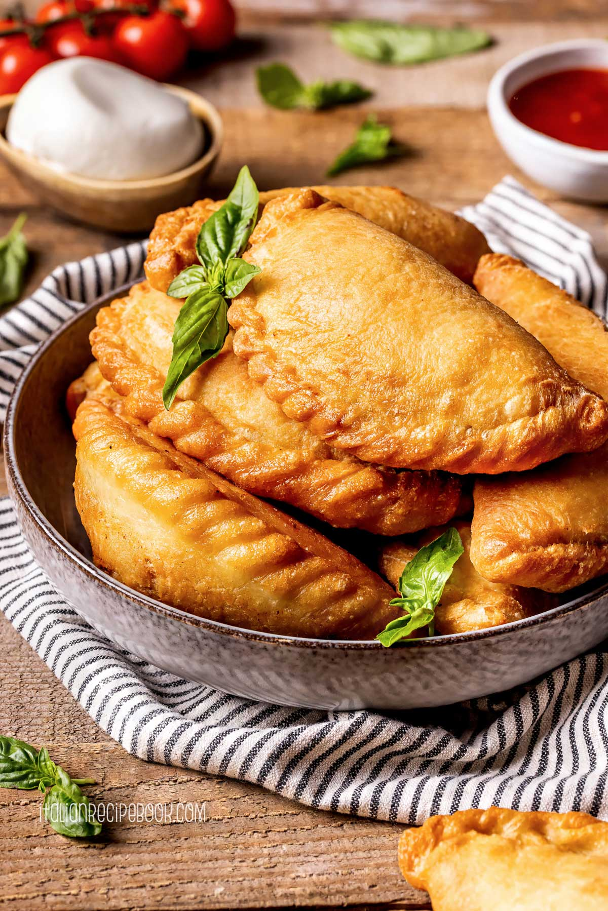

Panzerotti
Home

I panzerotti fritti, anche detti calzoni, sono tipici della cucina pugliese.
Mezzelune di pasta lievitata, molto simili all'impasto della pizza, ripiene con mozzarella, pomodoro e origano.
I panzerotti fritti sono diffusi dal Lazio alla Sicilia, ma i panzerotti più buoni si preparano in Campania e in Puglia.
Proprio in queste due regioni, i panzerotti fritti in Puglia e pizza fritta in Campania, è possibile acquistare questa bontà direttamente dalle numerose rosticcerie per strada.
Il calzone fritto infatti è un appetitoso street food da gustare a qualsiasi ora!
Ingredienti
- Farina Manitoba 250 g
- Farina 00 250 g
- Olio extravergine d'oliva 8 g
- Zucchero 5 g
- Acqua 285 g
- Sale fino 10 g
- Lievito di birra fresco 8,5 g
- Passata di pomodoro 200 g
- Fiordilatte 250 g
- Origano q.b.
- Sale fino q.b.
- Olio di semi q.b.
Preparazione
- In una ciotola versate la farina 00 e la manitoba, sbriciolate il lievito di birra fresco e aggiungete lo zucchero.
- Aggiungete metà dell'acqua e iniziate a lavorare con un tarocco. Aggiungete quindi il sale
- Versate la restante acqua e lavorate ancora con il tarocco. Unite poi l'olio
- Iniziate ad impastare con le mani. Non appena l'impasto avrà preso consistenza trasferitelo sul piano e impastate per alcuni minuti finché non sarà liscio e omogeneo. Formate quindi un salsicciotto.
- Stagliate in 10 pezzi da 80 g ciascuno. Sistemate quindi le palline su un vassoio, distanziandole bene.
- Coprite con un canovaccio 16 e lasciate lievitare per un'ora e mezza
- In un pentolino scaldate un filo d'olio e versate la passata di pomodoro. Fate cuocere a fuoco dolce per circa 15 minuti.
- Quando sarà pronto trasferite il sugo in una ciotola, profumate con dell'origano secco
- Recuperate le palline, ormai lievitate. Prendetene una, schiacciatela leggermente su un piano leggermente infarinato.
- tiratela aiutandovi con il matterello. Dovrete ottenere un disco rotondo spesso circa 2 mm. Ponete al centro di ogni cerchietto prima la passata di pomodoro e poi la mozzarella.
- Chiudete a mo' di mezzaluna, avendo cura di sigillare accuratamente le estremità.
- caldate abbondante olio di semi in una pentola portandolo a 170° e friggete i panzerotti, immergendone 1- 2 alla volta. Appena torneranno in superficie girateli.
- Scolate su carta assorbente e serviteli.